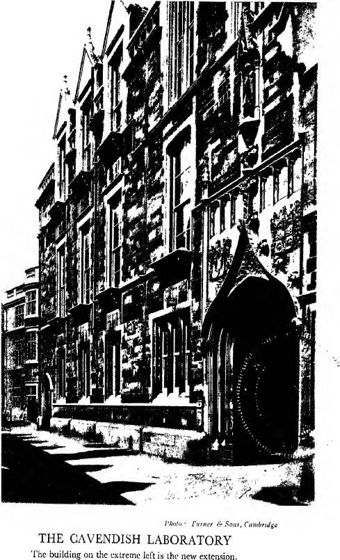
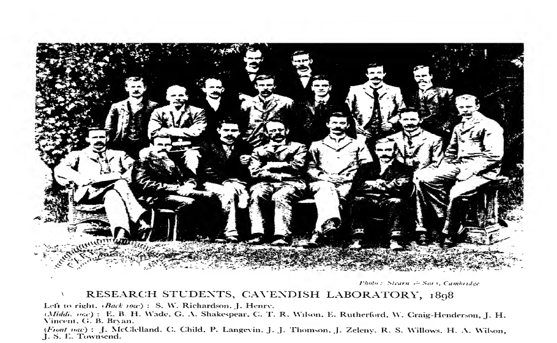

CHAPTER IV#
The Cavendish Laboratory and Professorship of Experimental Physics#
THE Cavendish Laboratory has played such a large part in my life that I hope to be pardoned if I say something about its history. Though many very great discoveries in physics had been made in Cambridge as far back as Newton’s time, it was not until 1869 that steps were taken to have in the University a physical laboratory and a Professor of Experimental Physics. Newton and Stokes had made their experiments in their own rooms with their own apparatus and at their own cost. In the early sixties, however, the importance of science in education was warmly advocated by Huxley, Roscoe and Lockyer along with others, and considerable interest in the teaching of science was aroused. In 1866 Clifton was appointed to a new Chair of Experimental Physics in Oxford and the building of the Clarendon Laboratory was commenced in 1868 and finished in 1872. In Cambridge there was in addition to the general recognition of the importance of science in education a special one for making provision for the teaching of heat, light, electricity and magnetism, for in 1868 these subjects had been added to those included in the Mathematical Tripos, and it was necessary to provide for instruction in them. A Syndicate appointed in November 1868 to consider how this might best be done, reported in February 1869 in favour of establishing a Professorship and Demonstratorship of Experimental Physics, and the erection of a physical laboratory adequately supplied with apparatus; they thought this would cost £6300. The University was then so poor that it was clear that there would be great difficulty in raising this sum. The situation was saved, however, by the Chancellor of the University, the 7th Duke of Devonshire-who had been first Smith’s Prizeman and Second Wrangler-offering to provide funds for building the laboratory and stocking it with apparatus. The building alone cost £8450, considerably more than the estimates, and the Duke not only defrayed this, but also continued to provide apparatus for the laboratory until Maxwell, three years after the laboratory had been opened, reported “that it contained all the instruments required by the present state of science”. It has never since been in this condition. If it had not been for the generosity of the Chancellor, though no doubt in time the University would have had a physical laboratory, it would not have had Maxwell as a Professor, and the Cavendish Laboratory would have been without the inspiration and tradition which it owes to its first Professor. In February 1871 the University sanctioned the creation of a Professorship in Experimental Physics, to which Maxwell was appointed in March of the same year. It was believed at the time that the University had first approached Sir William Thomson and then von Helmholtz, the great German physicist and physiologist, but neither of these could see his way to accept the post. At the time of his election Maxwell’s work was known to very few, and his reputation not comparable with what it is now. The Treatise on Electricity and Magnetism did not appear until two years later, and though he had published the fundamental ideas long before in the scientific Journals, they had attracted but little attention, and his reputation was based mainly on his work on the kinetic theory of gases. Indeed, even at the time of his death the truth of his supreme contribution to physics-the theory of the electromagnetic field-was an open question. It was only when nearly ten years later Hertz detected by experiment the electromagnetic waves, which were the characteristic and essential part of his theory, and which distinguished it from all others, that the importance of his work was adequately realised.
Clerk Maxwell#
Maxwell delivered his inaugural lecture in October 1871. It is a very able and interesting essay on the functions of experimental work in the laboratory in University education. It has been quoted very frequently, perhaps oftener than any other of his writings. But for the moment it was almost a fiasco. Sir Horace Lamb, who was at it, describes it in the James Clerk Maxwell Commemoration Volume: “The announcement of it had been made in such a way that it had escaped the notice of the older members of the University. It was not given in the Senate House, the usual place for such lectures, but in an obscure lecture-room. The result was that only about twenty were present, and these were all young mathematicians who had just taken, or were about to take, the mathematical Tripos, but more remains behind.” I quote Sir Horace Lamb’s account of this: “The sequel was rather amusing. When, a few days later, it had been announced with proper formality that Professor Maxwell would begin his lectures on heat at a certain time and place, the dii majores of the University, thinking that this was his first public appearance, attended in full force out of compliment to the new Professor, and it was amusing to see the great mathematicians and philosophers of the place such as Adams, Cayley, Stokes, seated in the front row while Maxwell, with a perceptible twinkle in his eye, explained to them the difference between the Fahrenheit and Centigrade scales of temperature.”
“It was rumoured afterwards, and perhaps it is not incredible, that Maxwell was not altogether innocent in this matter, and that his personal modesty, together with a certain propensity to mischief, had suggested this way of avoiding a more formal introduction to his Cambridge career.”
During the erection of the laboratory he lectured each term in such rooms as happened to be vacant. He said he went about like a cuckoo, dropping ideas about heat in the chemical laboratory in the October Term, about electricity in the botanical laboratory in the Lent Term, and about magnetism in the New Museums in the Easter Term. His lectures were quite elementary and were not so well attended as they ought to have been. Some who attended have expressed the pleasure they got from the quips and cranks and dry pawky humour which now and then broke through the crust of science. This side of his character comes out very clearly in the verses which he wrote from time to time, and which are published at the end of Lewis Campbell’s biography.
The laboratory was formally opened by the Chancellor of the University in October 1874. I believe W. M. Hicks, who was afterwards Professor and then Principal at Sheffield University, was the first to come, but others gradually drifted in, most, though not all, men who had lately taken the Mathematical Tripos and had no previous experience of experimental work. At first they were set to read scales and verniers, to measure times of vibrations, to use a reflecting galvanometer, to measure the resistance of a wire; after a short time spent in this way, they were often set to measure the horizontal component of the earth’s magnetic force by a magnetometer of the Kew pattern. Maxwell had a high opinion of the training to be got by using this instrument. It afforded practice not only in reading scales and measuring times but also in making adjustments, and the accuracy with which these had been done was indicated by the value obtained for the magnetic force. After a short course of this kind they began to work at a specific problem. He liked the student to have thought of one for himself. “I never,” he said, “try to dissuade a man from trying an experiment. If he does not find out what he is looking for he may find something else.” In most cases, however, the student wished Maxwell to select a subject for him. Maxwell did so, and spent great pains in planning how the experiment had best be tried. When he was satisfied with this, he acted on what I believe to be the right principle of encouraging the student to try to overcome the difficulties himself, and that it is better for the teacher to do this rather than to remove them out of his way. Maxwell went round the laboratory for an hour or two most days, generally accompanied by his dog, and talked with the students about their researches. They also got valuable help from the Demonstrator, W. Garnett, who was a good amateur carpenter, and was always ready to help those who were not, in making the alterations in the apparatus or the simple contrivances which are continually being called for in experiments. This help was especially valuable, for at the beginning there was no skilled workman in the laboratory. At first all the students were research workers, nearly all of them graduates. The first undergraduate who worked in the laboratory was my old friend H. F. Newall, who later became Professor of Astro-Physics at Cambridge. He in his first term, against the advice of his tutor, entered this unexplored region, and like most explorers found the going was not easy.

This figure is a high-contrast black-and-white architectural photograph of the Cavendish Laboratory frontage along a narrow street. The facade shows multiple stories with stone and brick textures, rows of windows, and a prominent arched doorway in the right foreground. Deep shadows from the opposite side of the street fall across the pavement and lower wall. The printed caption below the image reads “THE CAVENDISH LABORATORY” with the note “The building on the extreme left is the new extension.” A small credit line above the caption reads “Photo Turner & Sons, Cambridge.”
Important researches were made between 1874 and 1879 in the laboratory by G. Chrystal, later Professor of Mathematics in Edinburgh University, on the accuracy of Ohm’s Law; by Donald MacAlister, Senior Wrangler and later Sir Donald MacAlister, Principal of Glasgow University, on a new proof that the attraction of a point charge of electricity varies inversely as the square of the distance; by R. T. Glazebrook (Sir R. T. Glazebrook, K.C.B., F.R.S.), later Principal of Liverpool University, after that Director of the National Physical Laboratory, on the wave surface in a biaxial crystal; by Arthur Schuster, afterwards Sir Arthur Schuster, F.R.S., in spectroscopy; by J. A. Fleming, now Sir Ambrose Fleming, on the measurement of resistances. Maxwell himself did not do any continuous experimental research in Cambridge. Though he came to Cambridge in 1871, the laboratory was not opened until 1874. Afterwards, the greater part of his time was spent in editing the works of Henry Cavendish, a pious duty for a Cavendish professor. Cavendish, though he only published two papers, left twenty packages of manuscripts on mathematical and experimental electricity. Maxwell copied these out with his own hand. He saturated his mind with the scientific literature of Cavendish’s period; he repeated his experiments; he was especially attracted by one where Cavendish had been his own galvanometer and had estimated the strength of the current by the shock it gave him when he passed it through his body. Visitors to the laboratory had currents passed through them to see whether or not they were good galvanometers. The papers were published in 1879 under the title, The Electrical Researches of the Honourable Henry Cavendish.
Henry Cavendish#
They showed that Cavendish was even a greater man than had been thought. He anticipated Faraday in the discovery of the property known now as Special Inductive Capacity and measured its values. He had formed the conception of electrostatic capacity, had anticipated Ohm’s Law, had made experiments which proved that the force exerted by a point charge of electricity varies inversely as the square of the distance from the point. These papers confirm the impression produced by those published in his lifetime, that he was a superb experimenter. He had the gift, like Lord Rayleigh, of seeing what was the vital point in the experiment, and though the apparatus as a whole might look untidy and haphazard, the parts that really mattered were all right. It was a “rum ‘un to look at but a beggar to go”. A striking feature in these papers of Cavendish is that they are quantitative; definite measurements are given of the various effects. A great deal of the work done by the earlier experimenters had been, as was natural in the infancy of the science, qualitative. They tried to find whether an effect got greater or less under a certain change of conditions, but not how much greater or how much less. Cavendish, who measured everything he had to do with, measured electricity and speaks of inches of electricity.
His researches on electricity were made before the death of his father, Lord Charles Cavendish, who was also interested in science, in 1783. Until then he had lived with his father, and his apartments were a set of stables fitted up for his accommodation. After his father’s death he moved to a house in Clapham, the greater part of which was used for his experiments. It was here that he made his discovery of the composition of water, and measured by means of the torsion balance the density of the earth. There is no evidence that he made any more electrical experiments. It was natural that Cavendish in his earlier researches should have worked at electrical subjects, for at that time they were the ones which attracted far more attention than any others. The discovery of the Leyden jar, Franklin’s researches, particularly the invention of the lightning conductors, had aroused such an interest in electricity, and provided so many subjects for research, that they seemed the most promising, as they were the most popular, ways of obtaining new and important results.
Cavendish’s life was dominated by science to an extent which seems almost incredible. From the evidence of his contemporaries, given in Wilson’s biography, he never talked about anything else. In spite of his family traditions, he never took any interest in public affairs. In the latter part of his life he was very wealthy, yet he never paid any attention to his financial matters. When his balance at the bank was £80,000, his banker thought he ought to go to him and advise him to invest some of it, instead of letting it lie idle, earning no interest. He went, and Cavendish was very angry and said, “What do you come here for?” He told him. Cavendish said, “If it is any trouble to you I will take it out of your hands, so do not come here to plague me. What do you want me to do?” “Perhaps you would like to have £40,000 invested.” “Do so, and don’t come here to trouble me or I will remove it.”
He never wasted any time in deciding what he should do in the private affairs of life; he always did what he had done before. He took the same walk at the same time every day of his life, walking in the middle of the road to avoid meeting anybody he might chance to pass on the footpath. His tailor provided him on a fixed day in the year with a new suit which was a replica of the old one. He was a misogynist as well as a recluse. His female servants were there on the understanding that they should keep out of his sight; if he saw them they were dismissed. Even with his housekeeper his communications were written, not spoken.
The occasions when he went into society were all within the ambit of the Royal Society, to which he had been elected in 1760. He attended regularly its meetings, the receptions given on Sunday evenings by its President, Sir Joseph Banks, and above all the meetings of the Royal Society Club, a dining-club connected with the Royal Society which is still flourishing. It appears from the information contained in The Annals of the Royal Society Club by Sir Archibald Geikie, that at the meetings of this club, when he was surrounded by men of science, he was a very different person from what he was in ordinary life. There is in existence an account of a club dinner at which Cavendish was present, written by a French guest. After describing the dinner itself, when nothing but porter was drunk, “and this out of cylindrical pewter pots, which are much preferred to glasses because one can swallow a whole pint at a draught”, he goes on to speak of the number of toasts which were drunk after the cloth had been removed, and the wine was going round. After these had been drunk and followed by brandy and rum, he says, “I repaired to the Society [the Club dinners began at 5, and the meeting of the Society at 8] along with Messrs Banks, Cavendish, Maskelyn, Aubert and Sir Henry Englefield. We were all pretty much enlivened but our gaiety was decorous.”
Cavendish was made a member of the Club in 1760, a few months after he had been made a Fellow of the Royal Society, and in accordance with his habit of doing the same thing over and over again, he attended with a regularity which has never been even approached by anyone else. In those days the Club met every Thursday throughout the year, much more frequently than it does now.
From 1770 onwards until the end of his life, his record was never lower than 44 attendances in the year, and was usually about 50. In 1784 January began on a Thursday and December ended on Friday, thus allowing 53 dinners in the year, and he was present at every one. He always put his hat on the same peg.
He not only came himself, but also frequently brought guests. One year he had as many as nineteen. These were not all physicists or mathematicians; some were doctors, some engineers, travellers, naval officers. Professor Playfair, who was a guest at these dinners, says, “He never speaks at all but that it is exceedingly to the purpose, and either brings some excellent information or draws some important conclusion. His knowledge is very extensive and very accurate. Members of the Royal Society look up to him as one confessedly superior.”
“Dr. Wollaston, who also often dined at the Club, said, ‘The way to talk to Cavendish is never to look at him but to talk as it were into vacancy, and then it is not unlikely you will set him going’. His silence in general society may have been because he had nothing to say about the things which interested his audience. I have known more than one man of science who would sit through a long dinner without saying a word to those sitting next to him, and yet would speak freely and well on things that interested him.
In the case of Cavendish we must remember that the motto of the Royal Society is Nullius in verba, and his family motto Cavendo tutus, and neither of these encourages loquacity.”
Lord Rayleigh#
Maxwell’s health began to fail at the beginning of 1879 and he was able to spend only very little time in the laboratory. He went to Glenlair, his house in Galloway, for the summer but rapidly grew worse. He was brought back to Cambridge to be under the care of his favourite physician, Sir George Paget. He suffered much pain, which he bore with great fortitude. He died on November 5, 1879.
The Professorship had been established under the regulation that it was to “terminate unless the University by the Grace of the Senate shall decide that the Professorship shall be continued”. A Grace to continue the Professorship was passed on November 20, 1879. Lord Rayleigh was persuaded to become a candidate and was elected on December 12, 1879. He began his work at the laboratory in the Lent Term of 1880, giving a course of lectures on physical apparatus which were well attended. He also began to organise and develop the teaching of physics to undergraduates, which had hitherto been somewhat neglected. The need for this was pressing, for the number of students taking physics was increasing quickly, and also because the University had decided that in 1881 the Natural Sciences Tripos was to be divided into two parts. In Part I candidates were expected to take the more elementary parts of three or more subjects, while in Part II they were expected to specialise in one subject. This Part would demand a knowledge of the more advanced parts of physics, and for this there was as yet no provision.
To provide it would require a good deal of extra apparatus, and one of the first things Lord Rayleigh did was to raise a sum of about £1500 for this purpose by asking for donations from a number of his friends. Garnett resigned his Demonstratorship in the Lent Term of 1880, and R. T. Glazebrook and W. N. Shaw were appointed Demonstrators. They, in consultation with Lord Rayleigh, evolved a scheme for instruction in practical physics which, in its essentials, was the same as that now in force more than fifty years later. There were demonstration classes each term on some branch of elementary physics; these were three times a week, each lasting for two hours. The subjects included in Part I of the Natural Sciences Tripos were covered in three terms. A student was required to finish one experiment and write out in his notebook an account which satisfied the Demonstrator before he could proceed to another. A similar plan was adopted for the demonstrations in the advanced subjects. The students were not limited here, however, strictly to two hours, but could stay longer if they wished. There was a laboratory notebook for each experiment, and the students wrote the account of their work in this as well as in their own book. This plan worked well; the student thought he was writing for posterity and took special pains with his description of his experiment. This was good practice in a very important thing-clear exposition of the results he had obtained. The numbers attending the elementary classes increased so rapidly that, before the end of Lord Rayleigh’s tenure of the Professorship, they had to be duplicated, and two additional Demonstrators appointed to assist Glazebrook and Shaw.
Almost as soon as he came to Cambridge, Lord Rayleigh began the determination of the absolute measure of various electrical quantities, which raised the standard of electrical measurement to a higher plane. He began with the re-determination of the ohm. There had been a determination of this made in 1864 under the direction of a Committee of the British Association. The experiments were made by Maxwell at King’s College, London, where he was then Professor. They issued a standard, afterwards called the B.A. Ohm, which professed to have a resistance in absolute measure equal to \(10^9\). Later experiments had led to serious doubts about the accuracy of this standard, the differences covering a range of about 3 per cent. The apparatus used by the Committee was in the Cavendish Laboratory, and was used by Rayleigh in collaboration with Mrs Sidgwick and Schuster. The apparatus was set up, and experiments commenced, in the summer of 1880 and the experiments concluded by the end of 1881. The result was that the resistance in absolute measure of the B.A. unit was \(\cdot 987 \times 10^9\) instead of \(10^9\) as it ought to have been. The greater part of the error was traced to a very commonplace cause, a mistake in arithmetic. In the experiments several instruments had to be observed simultaneously, and visitors to the laboratory were sometimes called on to take a hand. I remember seeing Mr Arthur Balfour set down to read a galvanometer.
Rayleigh did not stop here. He repeated the experiment, using the same method but larger apparatus, then he made another determination using a different method. The three determinations gave very concordant results. These experiments had taken three years of very difficult and often harassing work; for example, at one stage the readings taken one day did not agree with those on the next, and it took two months to get over this difficulty.
Lord Rayleigh, in collaboration with Mrs Sidgwick, went on to determine in absolute measure the other electrical standards: the ampere, the standard of electric currents, and the volt, the standard of electromotive forces.
Lord Rayleigh, by the experiments he made when he was Cavendish Professor, raised the standard of electrical measurement to such a high level that it may be claimed that here he has changed chaos into order. His results have stood the test of time; they have been confirmed by later measurements made with larger and more elaborate apparatus, and have been adopted by International Congresses as the basis for the definition of the Ohm, Ampere and Volt for legal purposes. The accuracy of the value of the standards is of vital importance both to the physicist and to the electrical engineer. The physicist in his mathematical investigations must use the absolute measures of any electrical quantity which may occur in them, and express the results he obtains in terms of them. Suppose, for example, that his calculations indicate the existence of a certain effect whose magnitude depends on the electrical resistance of a piece of the apparatus he is using to detect it. If he wishes to test this in the laboratory, he has to measure this resistance in ohms. If the absolute measure of the ohm is wrong, the results he obtains will not be in accordance with those predicted by the theory; he may conclude that his theory is wrong and must be abandoned, whereas the difference is due to the error in the ohm. When Lord Rayleigh began his experiments there was an uncertainty of about 3 per cent in the absolute value of the ohm. This might cause a discrepancy of this amount between the theoretical and observed results, far greater than could be accounted for by errors in carefully made experiments.
Again, the electrical engineer, like the physicist, uses the absolute value of electrical quantities in his calculations, and if the ohm, ampere or volt are wrong, the actual efficiency of a dynamo or motor will be different from the estimate. This difference in a huge industry like electrical engineering, when expressed in terms of money, may involve very large sums.
Besides his experimental works, Lord Rayleigh published many theoretical papers of first-rate importance during his stay in Cambridge. It was his custom not to come to the laboratory in the morning if he was not lecturing, but work in his study at home. I think the one that gave him the greatest pleasure was that on the soaring of birds, in which he gave an explanation of the striking fact that some birds, e.g. gulls and albatrosses, can, without moving their wings, and in the absence of an upward wind, soar round and round at a constant height, and even in some cases get higher and higher. Rayleigh showed that this might be possible even where the wind was horizontal, if its velocity increased with the height above ground. The bird must go downwards when flying with the wind and upwards when flying against it. I remember his talking to me about this before it was published; in fact he felt some hesitation about publishing it because he thought it was too pretty to be correct. It is now, I believe, universally accepted.
There were several researches going on in the laboratory besides those made by Lord Rayleigh himself. Glazebrook determined the ohm by a method different from either of those used by Lord Rayleigh, and completed a research on the reflection of light from the surface of a uniaxial crystal. Shaw began his meteorological investigation on the comparison of different forms of hygrometers. Sir George and Sir Horace Darwin endeavoured to find evidence of tides in the earth’s crust due to the motion of the moon, but the conditions were not sufficiently free from other disturbances to allow this effect to be detected.
No mention of the Cavendish Laboratory at this period would be complete without mention of Mr George Gordon, who was in charge of the workshop. He had been a shipwright in Liverpool and was very skilful and quick with the adze. His work was not pleasing to the eye but it did what it was expected to do, which was all that Lord Rayleigh demanded.
Sir Richard Threlfall#
Laboratory for thirty-six years. Mr Lincoln came to the Laboratory in 1892 when he was a very small boy, so small that he had to stand on a box to reach the bench. W. H. Hayles, who afterwards became chief lecture assistant, was appointed by me in the first term of my Professorship. He rendered good service to the Laboratory for more than fifty years, when he retired under the age limit. He was a skilful photographer, and very expert in making lantern slides. He had the valuable quality of realising to the full what an important part he played in the lecture, and spared neither time nor trouble to make the experiment succeed.
My first course of lectures was given in the Lent Term of 1885. The beginning was not very auspicious, for in my first lecture, though I got on quite well until about ten minutes before the time to stop, I then became very dizzy: I could not see my audience, and thought I was about to faint and had to dismiss the class. I recovered in a few minutes and have never suffered in this way again. I attribute it to having turned round to look at the blackboard at my back too often. I have sometimes felt this in a slight form when lecturing in a darkened room and showing many lantern slides, and often turning my eyes from the brightly lighted screen to the darkened room.
Immediately after my election to the Professorship, I began, in collaboration with my old friend, Richard Threlfall, some experiments on the passage of electricity through gases. Threlfall had just taken a First Class in physics and chemistry in Part II of the Natural Sciences Tripos, but his enthusiasm for physics began long before he came to Cambridge. He had as a boy a laboratory and workshop at his home near Preston, and experimented during the vacations. When working at high explosives he had an explosion which blew off large parts of several fingers. In spite of this he was one of the best experimenters I ever met, and very skilful in the use of tools. I am myself very clumsy with my fingers, so that his assistance was of vital importance. This was the first of my experiments on the passage of electricity through gases, and since then there has, I think, never been a time in which I have not had some experiments in hand on that subject. I was attracted to it because I wished to test the view that the passage of electricity through gases might be analogous to that through liquids, where the electricity is carried by charged particles called ions. My view was that whenever a gas conducts electricity, some of its molecules must have been split up by the electric forces acting on the gas, and that it is these which carry the electricity through the gas. On this view, a gas in which all the molecules are in the normal state cannot conduct electricity. My idea at that time was that some of the molecules were split up into two atoms, one of which was positively, the other negatively, electrified, and my first experiments were intended to test this idea. It was not until 1897 that I discovered that the decomposition of the molecule was of quite a different type from ordinary atomic dissociation; then I found that one of the bodies into which the molecule split up, the one carrying the negative electricity, is something totally different from an atom, and that its mass is less than one-thousandth part of that of an atom of hydrogen, the lightest atom known.
Towards the end of my first years of office, T. C. McConnel, Fellow of Clare College, a man with a singularly acute and original mind, and who had done valuable original work in optics whilst at the Laboratory, left Cambridge to take part in a large business in Manchester with which his family were connected. Unfortunately his health broke down shortly afterwards and he spent the rest of his life in Switzerland, where he made valuable observations on the properties of ice. He explained the bending of ice, in cases when regelation was impossible, by the slipping of one crystal over another. He was one of the first to realise the importance of slip, and the difference between the properties of a single crystal and an aggregate.
Threlfall succeeded McConnel as Assistant Demonstrator, but was shortly afterwards appointed Professor of Physics in the University of Sydney, N.S.W. His first experiences were very characteristic; as soon as he arrived in Sydney he drove to the University to see the laboratory, but when he arrived there he was told there was no laboratory. Then he said he was going back to England, as he was not going to be a Professor of Experimental Physics without a laboratory where he could make experiments. They took him over the building, and showed him a room here and another there which he might use for his laboratory, but he said this would not do; he must have a proper laboratory. Then they promised to apply to the Government and use all their influence to get it to build a laboratory for the University. Then he agreed to stay, and broke to them that, as he knew he would not be able to get physical apparatus in Sydney, he had ordered in London apparatus which would cost about £2000, and which would be coming over before long. For some months the Government did nothing towards providing a laboratory, but in the meantime Threlfall had become very friendly with the Prime Minister, who was very fond of working with a lathe, and got many useful tips from Threlfall, who was an adept at this work. In spite of Threlfall’s attempts to induce the Prime Minister to provide the laboratory, nothing happened for some time, when one evening the Prime Minister came into the Club, went up to Threlfall and said, “Well, Dick, I’ve done the square thing by you at last; I’ve put your laboratory on the Estimates. We’ve just been beaten on a division and are going out, so the other fellows will have to pay.” The result was that Threlfall got a physical laboratory which at the time was one of the finest in the world, and which he soon made into a very active centre of scientific research.
Very soon after I became Professor I was fortunate enough to persuade H. F. Newall (later Professor of Astro-Physics in Cambridge) to come to work in the Laboratory, and for some time we researched together. One of our researches, which led to very pretty experiments, was on the production of vortex rings by drops of one fluid falling through another. When Threlfall went to Australia Newall succeeded him as Assistant Demonstrator. In 1887 W. N. Shaw, who with Glazebrook had organised the teaching of practical physics in the Laboratory and had with him directed the teaching of this subject for seven years, accepted a Tutorship at Emmanuel College. His new duties made too great demands on his time to permit of his continuing his work as Demonstrator, involving as this did attendance at the Laboratory for practically the whole of every other day. He was prevailed upon, however, to continue the courses of lectures on physics which he had given for many years, and he continued to lecture every term until he left Cambridge in 1900 to become Superintendent of the Meteorological Council. He was succeeded as Demonstrator by Newall in 1887, who held office until 1900, when he left the Laboratory to take charge of the large telescope which his father had left to Cambridge University. When Newall was made Demonstrator, L. R. Wilberforce, later Professor of Physics at Liverpool University, succeeded him as Assistant Demonstrator, and when Newall ceased to be Demonstrator Wilberforce succeeded him again. I cannot refrain from quoting an account given by Wilberforce of the relations between them, because it is so true and so honourable to both: “It was impossible to work under him and see not only his ability as a physicist and as an organiser, but also his unfailing patience, kindness and good-humour to his subordinates and his students, without deriving instruction and inspiration from his example” (History of the Cavendish Laboratory, p. 255).
Classes For Medical Students#
Though lectures suitable for candidates for the 1st M.B. Examination were given by Glazebrook, who was lecturer in physics at Trinity College as well as a University Demonstrator, there was no teaching in practical physics suitable for these students until 1887, and no practical work in the examinations. About this time a short oral examination was added as an experiment, and revealed that the knowledge of physics possessed by the candidates was peculiar though not extensive. It furnished the examiners with a crop of “howlers”, with which they entertained their friends for long after. In 1887 T. C. Fitzpatrick was appointed Assistant Demonstrator, and I was fortunate enough to induce him to undertake the organisation of the teaching of practical physics to medical students. At first the classes were small enough to be taken by one man, and did not take up much room in the Laboratory. They grew, however, very quickly, and in about a year L. R. Wilberforce was associated with Fitzpatrick. The attendance got so large that it was impossible to accommodate the students in the Laboratory, and we had to look out for a new home. We found one at last in a corrugated iron shed which had been used as a dissecting-room. It was not, to begin with, all that could be desired, for such a nauseating odour clung to it that Fitzpatrick and Wilberforce had to exhaust all the resources of physics and chemistry to dispel it. The Laboratory boy was so terrified by fear of the ghosts of the former inhabitants that it was long before he could be persuaded to stay in the room unless someone was with him. When these difficulties had been overcome, the room proved well suited for its purpose. It was big enough to hold large classes, a most important point when the time-table is as crowded as that of a medical student. The classes were held here until a new south wing was added to the Laboratory in 1894. This contained a very large room designed and well equipped for large classes; in this the M.B. classes have been given ever since it was opened.
Glazebrook gave up the lectures to medical students in 1890 on becoming the Principal of University College, Liverpool. The lectures were continued by J. W. Capstick, who had succeeded him as Lecturer in Physics at Trinity College, and when he became Junior Bursar of Trinity in 1898, Fitzpatrick undertook the lectures as well as the demonstrations to medical students; from that time until he became Vice-Chancellor of the University in 1916 he had the entire management of this department of the Laboratory: he made a great success of it, and his work was of outstanding importance to the progress of the Laboratory. This is far from being the only obligation we are under to Fitzpatrick. Of the many gifts which have been received by the Laboratory, none have been more useful than the apparatus for producing liquid air, which he presented to the Laboratory in 1904. Many of the most important researches which have been made in the Laboratory would have been impossible without its aid.
Cavendish Laboratory#
The number of science students in Cambridge increased rapidly after 1885. The pressure on the space in the Laboratory was very great, but it was removed in 1896 when a new wing to the south was opened. The greater part of the cost was borne by the Laboratory, which provided £2000 from the accumulation of fees from students attending the classes. In this wing there is a very large room used for the elementary classes in practical physics, for examinations in practical physics for the Natural Science Tripos and for entrance scholarships to the Colleges. Besides this there was a new lecture-room, cellars for experiments requiring a constant temperature, and a private room for the Professor. The increase in the number of students required an increase in the staff, as we always tried to have one Demonstrator for, at most, twelve students. An additional University Demonstratorship was founded whose salary was paid wholly from Laboratory fees, and S. Skinner was appointed to this in 1891, and C. E. Ashford and W. C. D. Whetham (now Sir William Dampier, F.R.S.), were appointed Assistant Demonstrators about this time. W. N. Shaw, who had been appointed Assistant Director of the Laboratory and had been University Lecturer for thirteen years, left Cambridge in 1900 on his appointment as Secretary to the Meteorological Council. It was decided to abolish the post of Assistant Director and create a new Lectureship, and G. F. C. Searle and C. T. R. Wilson were appointed to the two Lectureships. Searle only retired in 1935 and C. T. R. Wilson in 1925, when he was elected to the Jacksonian Professorship.
Finance#
The financial arrangements in force during my Professorship were that the University paid the salary of the Professor; of two University Lecturers, £50 each; of two University Demonstrators, £100 each, and of two Assistant Demonstrators, £60 each. The University Lecturers and Demonstrators paid by the University were not nearly sufficient to provide satisfactory teaching for the large number of students in the Laboratory, and it was necessary to provide other Lecturers and Demonstrators whose salaries were paid by the Laboratory. At the end of my tenure this cost about £1500 a year. In addition to the payment of some salaries by the University, the Laboratory received from the Museum and Lecture Rooms Syndicate £270 per annum. The Laboratory had also to pay the wages of the staff of the workshop-and also for the apparatus required for teaching and research, stores and material.
The income of the Laboratory came from fees for lectures and demonstrations, and from the University and Colleges for examinations in practical physics held in the Laboratory.
The distribution of these fees so as to provide for all the varied activities of the Laboratory was left in the hands of the Professor. This method is a rough and ready one, but I think, under the circumstances prevailing at the time, it was the most economical and efficient that could have been adopted. It was the method that had been in force since the foundation of the Laboratory. The fact that the greater part of the income of the Laboratory comes from students’ fees is an inducement to make the lectures and demonstrations as attractive as possible, and to start new ones as soon as there is a demand for them. The increase in the Laboratory expenses is not in direct proportion to the number of students. There are some overhead charges which remain the same, and so the profit increases with the number of students. Another advantage is that it is possible with this system to wait until an instrument is wanted before buying it. In the more usual practice, when the University takes the fees and makes a grant to the Laboratory for apparatus, unless you spend the money in the year for which the grant is made, the authorities responsible will think that the grant is greater than you need and reduce it. When the fees are at the disposal of the Professor, he can choose his own time when to spend the money. He may in time accumulate a considerable sum, and my experience is that the most useful instrument a laboratory can possess is a good balance at the bank. You may in this way have at hand a much greater sum than the annual grant, with which you can equip the laboratory with the instruments required to follow up new lines of research, such as radioactivity or positive-ray analysis. The money is ready at hand, and you have not to spend months in getting it from some Committee or Institution.
An illustration of this is that, when the work of the Laboratory was suffering severely from overcrowding, a new wing was built for £2000, the result of twelve years’ saving at the Laboratory. At that time (1896), the poverty of the University was so great that I was convinced from enquiries that I made that they would not provide this sum. Next with regard to economy. I have gone carefully into the question of what was the cost of the original research going on in the Laboratory. Taking the accounts for the year 1912-13, the year before the war broke out, and the last in which I was responsible for the research in the Laboratory, I find that an outside estimate for the extra expense incurred by the Laboratory for the researches would be £550, and there were forty research students. The cost of instruments required for the type of research then pursued in the Laboratory was very much less than that of those needed in some of the more recent developments of physics.
In those days the cost of researches done in the Laboratory had to be paid for by the Laboratory itself. The only aid it could get from outside was from the Government grant of £4000 a year for research, which was administered by the Royal Society and had to suffice for the needs of all the sciences, so that there was not much available for any particular science. There has been a great improvement since then. The Royal Society in the last twenty-five years has received very generous donations and bequests, so that in addition to the Government grant it has considerable funds which can be applied to the purchase of apparatus. The Department of Scientific and Industrial Research has made many grants for this purpose; some of the great City Companies and some Colleges, my own among the number, have received bequests which can be applied to aid the researches done by its members. And it was only the other day that Sir Herbert Austin gave the magnificent donation of £250,000 to the funds of the Cavendish Laboratory.
It is not, in general, the first discovery of some quite new physical phenomena that is costly. For example, the discovery of X-rays by Röntgen, of radium by the Curies, the long-continued experiments of C. T. R. Wilson on the formation of drops on particles charged with electricity, cost quite insignificant sums. Discoveries such as these were due to what cannot be bought: to keen powers of observation, to physical insight, to an enthusiasm which does not falter until the difficulties and discrepancies which attend on pioneering work are overcome.
When first the discovery is made, the effects observed are generally very small, and require a succession of lengthy experiments to obtain trustworthy results. It is the attempt to get larger effects that is so expensive. It may mean spending many thousand pounds in making powerful magnets or in producing electromotive forces of hundreds of thousand volts, or in obtaining large supplies of radium. Such money is, however, well spent, for it enables us to obtain new knowledge much more quickly and with greater certainty.
The Cavendish Laboratory was the first of the laboratories in the University where the benefactor defrayed the whole cost of the building, and it remained the only one until well on into the present century, for though a new chemical laboratory and the engineering laboratory had been built before then, the cost was borne wholly by the University. After the war the University was fortunate enough to receive many very large donations, and some of these were for building laboratories. Thus a large physiological laboratory was given to the University by the Drapers’ Company. The trustees under the will of Sir William Dunn presented to the University £150,000 for, along with other objects, providing a laboratory for biochemistry and establishing a Professorship in that subject. In 1919 the chemical laboratory received for the extension of the laboratory £210,000 from a number of prominent oil companies. The Rockefeller Foundation provided the University with a very large pathological laboratory; the Goldsmiths’ Company, a laboratory for metallurgy; the Mond Laboratory, for research in magnetism, came from the funds provided by the Royal Society; and the Low Temperature Laboratory was financed by the Board of Invention and Research. The Institute of Parasitology was created by the munificence of P. A. Molteno. I have mentioned only gifts for laboratories. Since the war twenty-six Professorships in many branches of science and literature have been created by benefactions.
In 1895 the University opened its doors to graduates of other universities whether at home or abroad, and in exceptional cases to those who were not graduates of any university, who wished to come to Cambridge for research or advanced study. These had to satisfy a Committee appointed for the purpose that they were qualified to do research, and that the research they contemplated was one which could be profitably carried out in the laboratory in which they proposed to work. They were entitled to the B.A. degree and certificate for research if, after two years’ residence in Cambridge, they submitted to the Committee work which, in its opinion, was “of distinction as a record of original research”. If they had only resided one year when they submitted a thesis which obtained this verdict, they were entitled to the certificate, but not to the degree until they had completed another year’s residence. This had such a great effect on the fortunes of the Laboratory, that 1895 is a convenient halting-place in a review of its progress.
Lectures#
After my appointment Glazebrook and Shaw continued their lectures for the first part of the Natural Sciences Tripos, and for this part I also gave three courses, one in the Michaelmas Term on the properties of matter, and a course on electricity and magnetism extending over the Lent and Easter Terms. For Part II, I gave two courses of lectures, one in the Michaelmas, one in the Lent Term, and in the Easter Term Glazebrook and I set papers for those who were going in for this examination at the end of the term. In addition, I had a class in the differential and integral calculus for students who were hampered in the study of physics by their ignorance of this subject. There were plenty of lectures in the Colleges on it, but they were given by mathematicians for mathematicians, and were not concerned with the applications of mathematics to other subjects. The difference was forcibly expressed by one of my students who was unable to attend my classes, and who went to College lectures. I asked him after about three weeks how he was getting on, and he said he had had to give them up because he had gone to them to learn how to use “Taylor’s Theorem”, (a fundamental part of the subject), and the Lecturer had talked about nothing but cases where Taylor’s Theorem could not be used. Later on these lectures were given by L. R. Wilberforce, and when he left by J. S. E. Townsend (then a research student), now Professor of Physics at Oxford.
Besides attempting to give students of physics some knowledge of mathematics, we organised some demonstrations to enable mathematical students to get some realisation of the physical subjects, heat, mechanics and hydrostatics, included in the Mathematical Tripos. The teaching of mathematical students in physics had been entirely bookish, and many of them had had no opportunities of seeing that their physics corresponded to anything real. The demonstrations brought to light some interesting points. We found many cases where men who could solve the most complicated problems about lenses, yet when given a lens and asked to find the image of a candle flame, would not know on which side of the lens to look for the image. But perhaps the most interesting point was their intense surprise when any mathematical formula gave the right result. They did not seem to realise it was anything but something for which they had to write out proofs in examination papers. The time-table of the mathematical students in those days was so crowded that it was difficult to find a time when they could attend the demonstrations. The classes were small and were given up after two or three years.
The lectures for Part II of the tripos were much strengthened towards the close of this period by a course on electrolysis by Mr Dampier Whetham (now Sir William Dampier, F.R.S.), who had made important researches on this subject in the Laboratory.
The Cavendish Physical Society was founded in 1893; it held fortnightly meetings preceded by tea in term time. Its primary object was the discussion of recently published papers on physics. Besides helping to keep the workers in the Laboratory abreast with recent work in physics, it gave them an opportunity of acquiring practice in lecturing, for the majority of the reports on papers were given by the students themselves. The discussions which followed the reading of the report helped to clear up difficulties, and not infrequently suggested subjects for further investigation. Again, a student who had completed a piece of research generally gave an account of the results he had obtained before publishing them. This was often very helpful, as it enabled him to see the points he had not made clear, and which would require further explanation before the paper was published.
Professor Callendar#
During the first two years of my Professorship Olearski, Natanson and H. F. Reid were working in the Laboratory. They were the first of a long series of students from foreign universities who have come to work in the Laboratory; they all attained distinguished positions as physicists. It is beyond the scope of this book to give an account of the many researches that were made in the Laboratory in this period: I must confine myself to a small number which contain points of general interest.
H. L. Callendar’s career at the Laboratory was in some respects the most interesting in all my experience. He was on the classical side when at school and did not do any physics. As an undergraduate he took a First Class in classics in 1884 and one in mathematics in June 1885. He came to work in the Laboratory in the Michaelmas Term in that year. He had never done any practical work in physics, nor read any of the theory except in a very casual way. He had not been in the Laboratory for more than a few weeks when I saw that he possessed to an exceptional degree some of the qualifications which make for success in experimental research. He was a beautiful manipulator, and delighted in making the results he obtained as accurate as was possible with the instrument he was using. The problem was to find a subject for his research which would give full play to his strong points and minimise as much as possible his lack of experience. I knew from the ability he had shown as an undergraduate that, whatever the subject might be, he would have no difficulty in mastering the literature about it. It seemed to me that the most suitable research would be one which centred on the accurate measurement of electrical resistance. Much work had been done in this subject, and methods evolved which gave results of great accuracy. The instrument required-the galvanometer-had been made so reliable that the use of it did not require a long apprenticeship.
The resistance of a platinum wire depends upon its temperature, so that if the resistance of the wire at different temperatures is known you can, by measuring its resistance, determine its temperature. The wire acts like a thermometer, and since platinum only melts at a very high temperature, it can be used for measuring temperatures at which a mercury thermometer would be useless. Siemens had actually constructed a thermometer on this principle, but this was found to have grave defects which made accurate determinations of temperature impossible. The simplicity and convenience of using a piece of wire as a thermometer was so great that it seemed to me very desirable to make experiments to see if the failure of Siemens’ instrument was inherent to the use of platinum as a measure of temperature, and not to a defect in the design of the instrument. Callendar took up this problem with great enthusiasm and showed that, if precautions are taken to keep the wire free from strain and contamination from vapours, it makes a thoroughly reliable and very convenient thermometer. This discovery, which put thermometry on an entirely new basis, increasing not only its accuracy at ordinary temperatures, but also extending this accuracy to temperatures far higher and far lower than those at which hitherto any measurements at all had been possible, was made with less than eight months’ work. I had very little to do with it beyond seeing how it was going on from day to day, and encouraging him when he was disheartened by the set-backs which occur in all researches.
The results of the investigation were set forth in a paper communicated to the Royal Society in 1886 and published later in their Transactions. He was a successful candidate for a Fellowship at Trinity College in the autumn of 1886, and sent in this paper as the dissertation which has to be submitted to the Electors to the Fellowships. The decision of the Electors is influenced far more by the merits of the dissertation than by any other consideration, and Callendar was elected though this was his first attempt. Candidates for Fellowships may try in any of the three years between taking the B.A. degree and being eligible for the M.A., and it is somewhat unusual for a candidate to be elected at his first opportunity. Thus, starting with no previous knowledge of physics, with no experience in making physical measurements, Callendar had in a few months obtained results of absolutely first-rate importance, an importance which cannot be gauged even by their publication in the Philosophical Transactions or by their leading to the election to a Fellowship. They gave to the physicist a new tool by which he could determine temperatures with an ease and accuracy never obtainable before. They were also of the utmost importance to industry; they enabled the steel-maker to measure the temperature of the molten metal in his vat, the brewer the temperature of his brew; they replaced guess-work by accurate measurement and cookery by science. Callendar’s case raises the question whether the very large amount of time devoted in our universities to the performance of experiments by students attending the advanced demonstrations in practical physics is either necessary or desirable. I am inclined to think that it is not, provided the candidate is a good manipulator and is an able man. I think such a one, if he had to use, in the research he was contemplating, some new type of instrument, would not be very long before he had mastered its technique. There have been many great physicists who never attended any demonstrations in practical physics-Joule, Stokes, Kelvin, Rayleigh, Maxwell, to take only English examples-and I am not sure that they lost much by the omission.
Callendar continued his researches on the connection between resistance and temperature at the Cavendish Laboratory until he left it in 1890 to be Professor of Physics at the Royal Holloway College; he went on with them afterwards in the laboratory at that College, and later still in the laboratory at McGill University, Montreal, where he had been made Professor of Physics. A comprehensive account of these is contained in his paper in the Philosophical Magazine for February 1899. In this he says that his experiments suggest that the resistance of certain metals vanishes at a temperature appreciably above the zero of absolute temperature. That this is the case has been proved conclusively by the experiments made by Kamerlingh Onnes and others at the low temperatures which can be obtained by the use of liquid helium and liquid hydrogen.
In addition to his other achievements Callendar, when in Cambridge, invented a new system of shorthand; he went into it very thoroughly, measuring accurately the time it took to write symbols of different shapes and selecting the fastest. I learnt the system and found it exceptionally easy to read and very useful for making rough notes, as it was not necessary to transcribe them into long hand.
Callendar became a Fellow of the Royal Society in 1894.
Researches#
W. C. Dampier Whetham (now Sir William Dampier) made important researches in this period with his new method of measuring the velocity of ions in liquid electrolytes, and also on the slipping of liquid when moving in contact with solid surfaces.
Some very notable experiments on the potential difference required to produce electric sparks at different lengths, and through gases at different pressures, between two large parallel electrodes were made by J. B. Peace. He found that when the pressure was kept constant and the distance between the plates gradually diminished, though at first the sparking potential diminished, the diminution ceased when the distance had been reduced to a certain value, and after this the sparking potential increased as the distance diminished, so that it was impossible to get a spark unless the potential exceeded a certain value, about 300 volts in air. Similarly, if the distance is kept constant and the pressure diminished, you cannot get a spark unless the potential difference exceeds 300 volts.
At the end of this period C. T. R. Wilson began to work at the Laboratory and published in 1895 the first of his papers on the formation of clouds, the beginning of a long course of researches which have been of vital importance for the progress of modern physics.
During this period I made experiments on the resistance of electrolytes, and the specific inductive capacity of dielectrics when under the influence of the very rapidly alternating currents produced by the discharge of a Leyden jar. I also made a long series of experiments on the passage of electricity through gases when the electric force producing the discharge was obtained by the forces due to electromagnetic induction, produced when the rapidly alternating currents due to the discharge of a condenser pass through a coil of wire. When a glass bulb containing gas at a low pressure is placed inside the coil, the electromagnetic induction produces electric forces inside the bulb which are able to produce a discharge through the gas. The discharge passes as a circular ring, since the lines of electric force inside the bulb due to electromagnetic induction are circular. There are in this case no electrodes in the gas; the discharge is reduced to its simplest form and never has to pass from the gas to another substance. I found these experiments very interesting. The discharge is, under proper conditions, bright and very beautiful, and the method has valuable applications to the study of many important questions in the discharge of electricity through gases, to the effect on the electrical and magnetic qualities of bodies of very rapid alternations in electric forces acting upon them, and to spectroscopy.
I made, too, experiments on the passage of electricity through hot gases, which supported the view that some kind of dissociation was associated with the conductivity of gas and that the current was carried by charged particles.
The year 1895 was one of great importance to the Laboratory, for in that year it ceased to be merely an undergraduate one, where the one object of most of the students was to pass examinations and secure first classes and to obtain scholarships and fellowships by excelling in this contest. Instead, the object of many became to increase knowledge by research. This made all the difference to the life and spirit of the Laboratory. The old students stayed to do research, and students from other universities came to work in the Laboratory. The outlook changed from one bounded by examinations and classes to one with no horizon.
Research Students#
It was represented to the University that since the M.A. degree did not entitle a man to be called “doctor”, our students were at a disadvantage when competing for teaching posts with those who had been to a German university and had obtained the Ph.D. degree. This policy of creating “Research Students” had a very auspicious start, for at the beginning of October 1895, when the regulations first came into force, Ernest Rutherford, now Lord Rutherford, O.M., F.R.S., and J. S. E. Townsend, now F.R.S., and Wykeham Professor of Physics at Oxford, came to the Laboratory to enter as research students within about an hour of each other; and not long afterwards J. A. McClelland, later F.R.S. and Professor of Physics in the University of Ireland until his death. Rutherford came from Canterbury College, New Zealand; Townsend from Trinity College, Dublin; and McClelland from Queen’s College, Galway.
Rutherford began his work at the Laboratory by working at wireless telegraphy, using a detector which he had invented before leaving New Zealand; it worked on the principle that a piece of soft iron wire, magnetised to saturation, loses some of its magnetism when placed inside a solenoid through which the rapidly alternating currents obtained from the wireless pass. He held, not long after he had been at work in the Laboratory, the record for long-distance telegraphy, as he had succeeded in sending messages from the Laboratory to his rooms about three-quarters of a mile away. Townsend began a research on the magnetic properties of the salts of iron of various types, which led to very interesting results. He found that the magnetism due to the same mass of iron was the same in all the ferrous salts and also in all the ferric, but the magnetism in the ferrous was not the same as in the ferric, while in salts like the ferricyanides iron was hardly magnetic at all.
The number of research students increased so rapidly after the introduction of the new regulations that in a few years they became what they have been ever since, a characteristic feature of the Laboratory, giving it quite a cosmopolitan tone. We have had among them students from practically every important university in Europe, Asia, Africa and America. Along with Cambridge students staying on after taking their degrees, there are generally graduates of most universities in Great Britain and the Dominions, some of them holders of the “1851 Exhibitions”, graduates from the United States, and frequently one or more professors of American universities spending their “Sabbatical Year” in research, and graduates from German, French, Russian and Polish universities. The advantage gained by our own students by their intercourse with men of widely different training and experience, of different points of view on political, social and scientific questions, of very different temperaments, can, I think, hardly be overestimated. They gain catholicity of view and some of the advantages they would get by residence in the universities from which the research students came. To give them better opportunities of getting to know each other, I arranged that we should meet for tea in my room every afternoon. Personally I found these meetings very delightful, and I made it a point to arrange my engagements so that I could attend them. We discussed almost every subject under the sun except physics. I did not encourage talking about physics because the meeting was intended as a relaxation for men working all day at physics, and also because the habit of talking “shop” is very easy to acquire but very hard to cure, and if it is not cured the power of taking part in a general conversation may become atrophied for want of use. If the morning papers contained an account of some striking event at home or abroad it was generally mentioned at our tea-party, and very frequently we found that there was someone who knew well the place where the event happened, who was able to throw fresh light upon it and make it seem much more vivid than the reading of any number of telegrams. I have, for example, when a Presidential Election was taking place in the United States, heard Republicans and Democrats fighting their battle with great vigour, and have felt that I learnt far more about American politics by listening to them than by reading columns in the newspapers from special correspondents.
The students from other universities were surprised and at first irritated by the restriction put upon them by the College regulations and particularly by the one which obliged them to be in their rooms before a certain time. No such restriction was in force in any of the universities from which they came, and they said it was like going back to the nursery and being sent to bed at 7 o’clock. Another matter which was a great puzzle to them was the duties performed by their College Tutor. In Cambridge there is a distinction between the office of Tutor and that of Lecturer. The Tutor is supposed to be in loco parentis to his pupils, and acts as the connecting link between the College and the parents. He generally holds a Lectureship in some subject, but only those of his pupils who are students of this subject go to his lectures. None of the College Tutors to whom they were assigned ever lectured on physics, and they could not understand what was the use of a Tutor. One of the research students thought he would take a busman’s holiday and spend his leisure in a research into what a Tutor did. He proceeded to make experiments. He went to his Tutor and asked him for permission to go to the theatre: the Tutor told him he did not need any such permission. Then after an interval he asked the Tutor to order a supply of coals for the winter to be sent to his lodgings. The Tutor said it was none of his business. He went on like this and at last received his term’s bill from the Tutor. He was quite pleased and said, “I have solved my problem: the Tutor sends in the bill”.
By 1898 the number of students had become large enough to justify the celebration of the beginning of the Christmas Vacation by a dinner. This was the first of a series which has gone on without interruption (except in war-time) until now. They are largely attended and highly valued since they enable old research students to meet old friends and talk of old times, and help to establish a connection between past and present research students. The first of these dinners was held in December 1898 at Bruvet’s Restaurant in Sidney Street. During the songs after the dinner the proctors came to enquire what the proceedings were about. They did not come into the room where we were dining, being, I suppose, impressed, and I have no doubt mystified, by the assurance of the landlord that it was a scientific gathering of research students. A notable feature of these gatherings was the songs specially composed for these occasions by research students. Mr A. A. Robb, the author of a well-known book on the metaphysics of mathematics called Space and Time, showed that he could tread a lighter measure with equal success, though I am afraid it requires more mathematical knowledge than I can assume to be possessed by all my readers, to appreciate the skill with which he has turned Maxwell’s equations into the chorus of a song to the tune of “The Interfering Parrot” in The Geisha:
dy by dy less dβ by dz is equal KdX/dt While the curl of (X, Y, Z) is the minus d/dt of the vector (a, b, c).
Mr Craig Henderson, who was, I think, present at the first dinner, was President of the Union in the Lent Term of 1898, the only Cavendish research student who has obtained this distinction.
Craig Henderson, while he was in Cambridge, saw a good deal of the ordinary undergraduate life, a thing which is not easy for a research student to do. He does not go to the same lectures as the ordinary student nor, since he is working in the laboratory all day, can he take part in their sports: the laboratory takes the place of the College, but it does not give him as good opportunities for making friendships with men of different interests, with different views on social, political, and religious matters, and with different experiences of life. It does, however, offer better opportunities of making friends with men of different nationalities. The research students are so enthusiastic about their work that, besides attending the meetings of the Cavendish Physical Society, they form societies of their own, and discuss fortnightly or weekly the recent advances made in physical science. This, though laudable in itself, does diminish the opportunities they have for meeting other than research students, and prevents them getting from Cambridge all that it could give. It is easy, however, to exaggerate this, so much depends upon the man himself. Some are born specialists, others are born with the gift of making friends and for taking an interest in a wide range of subjects. And after all, it is not only the research students who are specialists; there are students who specialise in some kind of sport and take little or no interest in anything else. Others specialise in the Union and take no interest in anything but debates; others in the cinema, and confine their interests to film stars.
The workers in the Laboratory during the period under consideration, 1896-1900, included L. Blaikie, G. B. Bryan, J. B. B. Burke, W. Craig Henderson, J. Erskine Murray, J. Henry, P. Langevin, J. G. Leatham, R. G. K. Lempfert, Theodore Lyman, J. A. McClelland, J. C. McLennan, C. F. Mott, I. Nabb, H. F. Newall, Vladimir Novak, R. B. Owens, J. Patterson, J. B. Peace, O. W. Richardson, A. A. Robb, W. A. D. Rudge, E. Rutherford, G. F. C. Searle, G. A. Shakespear, W. N. Shaw, S. Skinner, S. W. J. Smith, Hon. R. J. Strutt, J. Talbot, J. S. E. Townsend, J. H. Vincent, E. B. H. Wade, G. W. Walker, W. C. Dampier Whetham (now Sir William Dampier), R. L. Wills, C. T. R. Wilson, H. A. Wilson, J. Zeleny.
The merits of the research students were soon recognised by the Colleges. Trinity College elected Rutherford to the Coutts Trotter Scholarship in 1898 and Townsend to a Fellowship in 1899. Emmanuel, Caius, St. John’s and Trinity have been foremost in encouraging research students and research, and each of these offers each year a studentship open to any graduate of any university other than Cambridge. These, however, are not confined to students of physics.
In the period between the beginning of this century and the war the number of research students steadily increased, and in addition many distinguished physicists came from abroad and spent a year in research at the Laboratory. Among these were Professor Bumstead from Yale, Professor Carlheim-Gyllenskold from Stockholm, Professor Erikson from Minnesota, Professor Huff and Professor Mackenzie from Bryn Mawr,

A posed group portrait of Cavendish research students outdoors in 1898. Around fifteen men are arranged in seated and standing rows against a dense leafy backdrop; most wear dark suits and ties, with a few lighter jackets that stand out in the high-contrast print. The image has the grain and tonal compression of an old halftone reproduction, with facial details partially blown out. A caption panel under the photograph identifies the group and date.
Visitors From Abroad#
Professor L. T. More from Cincinnati, Professors Nichols and Hull from Dartmouth College, U.S.A.; Professor Karl Przibram from Vienna; Professor Smoluchowski, University of Lemberg; Professor Vegard, University of Christiania. All arrived in the first decade of the century. They formed a very welcome addition to our society; they were the most agreeable of companions and we got from them first-hand information of the methods of teaching physics in their own country, and learned which parts they thought from their own experience were satisfactory and which required alteration.
The American Professors were keenly interested in the difference between life at Cambridge and that at an American university. The late Professor Bumstead, who during the war came to London as liaison officer between our Board of Invention and Research and a similar body in America, to enable each country to become acquainted with the improvements and inventions made by the other, has given his impression of these in a letter published in the History of the Laboratory, from which I give a few extracts: “With regard to the University as a whole, one thing which struck me was the essentially British way in which it has utilised survivals of the past, not sweeping them away because they were or might become abuses, but adapting them to modern conditions in such a way that you have a better instrument for the presentation and enlargement of knowledge than we can make here with the ground all clear for the ‘most modern improvements’. Two illustrations of what I mean will suffice. One is the division of the University into Colleges, which seems to me to be of enormous advantage to the social life of both undergraduates and dons and to their broad intellectual development. In this country we have schools of engineering, law, medicine and divinity, the liberal arts and so on. The social groups tend to follow these lines with a distinctly narrowing influence. I think you have a much better arrangement and yet I cannot see how it could be made to order. It is only history and tradition that make Trinity, St. John’s and Caius all different and yet parts of one whole.
“Another survival which I envy you is the system of Fellowships, which I suppose was the source of some abuse in the past. But I believe it is on the whole the best means of promoting research and sound scholarship which could be devised… . If you can keep your Fellowship system from being reformed too much, you will be fortunate among the universities of the world.” “Your social life struck me as much richer and fuller than ours, really we seem to work too much to enjoy each other’s society and yet we do not get so much done as you. I don’t understand it altogether: a laboratory in this country in which nobody ever began work before 10 A.M. or worked later than 6 in the evening would serve as a terrible example of sloth and indolence. I do not see how you can get so much work done and yet have time to live so pleasantly and unhurriedly.” “I have never seen a laboratory in which there seemed to be so much independence and so little restraint on the man with ideas.”
The election of a man of science to the Fellowship of the Royal Society of London, the most important scientific society in this country, is a proof that his work has been of exceptional importance and merit. This honour has been conferred upon many of those who worked in the Cavendish Laboratory while I was Professor. See Appendix.
A large number of students who worked at the Cavendish Laboratory whilst I was Professor were elected to Professorships in Physics in this and other countries. The list of universities in which my pupils have held Professorships is given in the appendix; when more than one Cavendish student has held the Professorship, the number is enclosed in brackets.
In 1902 a portrait of myself by Mr Arthur Hacker, R.A., was presented to the Laboratory by those who had been, or were at the time, my students. I think it is the portrait I like best. It was painted in very few sittings, as I had to sail to give some lectures at Yale, and there were very few dates which suited both the artist and myself. This is an example of what has always been my experience, that a few sittings give better results than a great many. I have had twenty-five and twenty-seven sittings for other portraits, and have watched the picture gradually getting worse after each sitting. Perhaps the most successful of all was a bust by Mr Derwent Wood, R.A., now in the library of Trinity College, for which I only sat for about forty-five minutes.
The portrait by Mr Hacker hangs in the Laboratory. Another example of the generosity and goodwill of my old students came on my seventieth birthday when they gave me an address with 259 signatures, together with a large cigarette-box, which I am afraid I use too often. These were presented to me at a dinner, when speeches were made by several very old friends and pupils: Lord Rutherford, Professor Langevin, Dr. A. Wood, Sir Arthur Schuster, Sir Richard Threlfall and Dr. Horton. A charming present was also made to my wife, who was at the dinner. These expressions of goodwill touched me very acutely; the remembrance of them is delightful. They recall the help, kindness and goodwill which it has been my good fortune to receive from everyone connected with the Laboratory, for more than fifty years. I owe to the Laboratory not merely the opportunities it has given me for indulging my scientific tastes in a way that would not have been possible in any other place. I owe to it besides many valued friends, and memories of friendships which can no longer be more than memories.